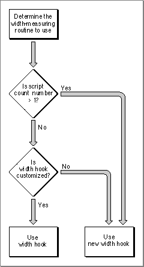

Legacy Document
Important: The information in this document is obsolete and should not be used for new development.
Important: The information in this document is obsolete and should not be used for new development.


Customizing TextEdit
This section describes how to customize TextEdit using theTECustomHookroutine to replace the end-of-line, drawing, width-measuring, and hit test default hook routines.It also describes the multi-purpose low-memory global variable
TEDoTexthook routine that displays, highlights, and hit-tests characters, and positions the pen to draw a caret. Finally, this section discusses how to customize word selection, automatic scrolling, and how to determine the length of a line of text in order to justify it. (For a brief discussion of hook fields and hook routines, see "Related Data Structures" on page 2-16.)The next four sections describe how to customize TextEdit using the
TECustomHookprocedure. Information about the use ofTECustomHookthat is common to all four sections is provided here.You can customize TextEdit's behavior by replacing any of the default hook
routines with those of your own. You use theTECustomHookprocedure to replace
a routine installed in a hook field of the dispatch record (TEDispatchRec). Initially, each hook field of the dispatch record contains the address of the default hook routine that TextEdit uses.The
TECustomHookprocedure returns the address of the default routine that it replaces so that your application-supplied routine can call the default routine, daisy-chaining it, if you want it to. For example, your routine can add additional functionality, then call the default routine instead of replicating all of its behavior. If you replace the address of a default hook routine with that of your own customized version, the next time you callTECustomHookfor that hook field,TECustomHookwill return the address of your routine. (For more information, see "TECustomHook" on page 2-105.) To ensure future compatibility, use the TextEdit customization routines to modify hooks rather than write directly to these fields.If you replace a default hook routine with a customized version that you write in a high-level language, such as Pascal or C, you need to provide assembly-language glue code that utilizes the registers for your high-level language routine. Refer to "TECustomHook" on page 2-105 for a description of the register contents on entry and return for each of the hook routines.
If you replace a default routine, take the following precautions:
- Before placing the address of your routine in the TextEdit dispatch record, strip the addresses, using the Operating System Utilities
StripAddressfunction, to guarantee that your application is 32-bit clean. For more information, see Inside Macintosh: Operating System Utilities.- Before replacing a TextEdit routine with a customized one, determine whether more than one script system is installed, and, if so, ensure that your customized routine accommodates all of the installed script systems. This avoids the problem of your customized routine producing results that are incompatible with the Script Manager.
- When you use assembly language, note that all registers must be preserved except those specified as containing return values. Register A3 contains a pointer to the edit record and Register A4 contains a handle to it. You can obtain line start positions from the
lineStartsarray in the edit record. Register A5 is always valid. Refer toTECustomHookin the TextEdit Reference section for complete coverage of the register content requirements for all hook routines.
Replacing the End-of-Line Routine
You can replace the address of the default end-of-line hook routine with the address of your own routine that determines an end-of-line character if you want the end-of-line to be defined by a character other than the carriage return.The default routine compares a given character with $0D (a carriage return) to determine whether it is an end-of-line character, and returns with the appropriate status flags (either
TRUEorFALSE) in the status register.Replacing the Drawing Routine
TextEdit calls the draw hook routine any time the various components of a line are drawn. The appropriate font, face, and size characteristics have already been set into the current graphics port by the time this routine is called.If your application uses an outline font, the default behavior of the Font Manager ensure's that glyphs fit within the font's ascent and descent. Glyphs that extend beyond the ascent or descent, such as certain accented fonts, are scaled down to fit.
If your application has set the
preserveGlyphparameter of the Font Manager'sSetPreserveGlyphprocedure toTRUEto preserve the original unscaled shape of the glyph, note that TextEdit sets it toFALSEbefore it calls the draw hook to perform any drawing. This is to guarantee that the glyphs whose bounding boxes exceed the font's ascent or descent are scaled down to prevent them from colliding with other glyphs on the lines above or below. TextEdit then restores thepreserveGlyphparameter to its previous value before proceeding.Replacing the Width-Measuring Routines
A width measurement hook routine measures portions of a line of text, and TextEdit calls one each time the width of various components of a line is calculated. There are three width measurement hooks: the width measurement hook, the new width measurement hook, and the text width measurement hook. Default hook routines of the same name as the hook field are installed in each of these hooks.The width measurement hook, which TextEdit used in the past, now exists to provide backward compatibility for applications that have replaced the default routine with a customized one. TextEdit uses the routine whose address is installed in this field only when both of the following conditions exist: when only the Roman script system is installed and the field contains the address of a customized routine.
In all other cases--when more than one script system is installed or when the width measurement hook has not been customized--TextEdit calls the routine whose address is installed in the new width measurement hook field to measure text.
Figure 2-14 shows a flow chart illustrating when the width measurement hook and the new width measurement hook routines are used.
Figure 2-14 Determining when to use
WIDTHHookandnWIDTHHook The new width measurement hook routine is called to measure text for both Roman and non-Roman script systems. If you replace this routine, make sure that your customized routine is script-aware.
The default action for the new width measurement hook routine is to call the QuickDraw Manager's
CharToPixelfunction orTextWidthprocedure to measure for non-Roman scripts. By default, theTextWidthHookfield contains the address of the QuickDrawTextWidthfunction. You can use this hook to replace TextEdit's use of the
QuickDrawTextWidthfunction with your own measuring routine. If you replace
this hook routine with a customized version, when the routine whose address is installed in the new width measurement hook field makes a call toTextWidth, your customized routine is invoked.To test for the availability of the width-measuring hooks, you can call the
Gestaltfunction with thegestaltTextEditVersionselector. A result ofgestaltTE2or greater returned in theresponseparameter indicates that the new width measurement hook is available, and a result ofgestaltTE5or greater indicates thatTextWidthHookis available.Replacing the Hit Test Routine
TextEdit calls the hit test hook routine to determine the glyph position in a line, given the pixel width from the left edge of the view rectangle. For versions of software earlier than 7.0, the default action is to call theTextWidthfunction to determine if the pixel width of the measured text is greater than the input width. If it is, then the hit test hook routine calls the QuickDrawPixelToCharfunction and returns. For system software version 7 and later, the default action is to call the QuickDrawPixelToCharfunction. In addition to the values defined by the register contents on entry, when TextEdit calls thePixelToCharfunction, it passes a value ofOnlyStyleRunfor thestyleRunPositionparameter and scaling factors of 1/1 for thenumeranddemonparameters. See "Hit Test Hook Registers" on page 2-108.Customizing Word Selection
A word-selection break routine determines which word is highlighted when the user double-clicks in the text. It also determines where TextEdit breaks the text at the end of a line. You can useTESetWordBreakto replace the default routine, installed in the edit record'swordBreakfield, that is used for word selection and line breaking under certain circumstances. Whether or not TextEdit uses the word break hook routine installed in this field is determined by the algorithm implemented in the defaultTEFindWordroutine, which is described below.When you replace the
wordBreakfield hook routine, your customized word-selection break routine is used instead of the default one. The default routine breaks words at
any character with an ASCII value of $20 or less (the space character or nonprinting control characters).Before non-Roman script systems were supported, TextEdit used the word-selection break routine referenced by the
wordBreakfield for all word selection and line breaking. However, in order to support both Roman and non-Roman script systems, TextEdit now uses the routine referenced by the low-memory global variableTEFindWord. The defaultTEFindWordhook routine determines which hook TextEdit should use for word selection and line breaking--thewordBreakhook or the Text UtilitiesFindWordBreaksprocedure--based on what script systems are installed
and some other factors. You can replace theTEFindWordhook routine with a customized version.The
TEFindWordhook routine is a higher level routine thanwordBreak. Because of this, when you customize theTEFindWordhook you are completely changing how TextEdit handles word selection and line breaking. However, when you replacewordBreak, you are only impacting those aspects of word selection and line breaking that are normally handled by thewordBreakroutine.The
TEFindWordhook routine gives your application more control over the breaking process and allows you to write more efficient routines. However, unless you include explicit tests for scripts in your customized routine, the algorithms you provide may be incorrect for non-Roman scripts. If you replaceTEFindWord, you should understand the behavior of the default routine.Here's how the default
TEFindWordroutine works:
When TextEdit calls the Text Utilities
- TextEdit initially determines whether a non-Roman script system is installed. If more than the Roman script system is installed, TextEdit always uses the Text Utilities
FindWordBreaksprocedure for line breaking and word selection.- When TextEdit determines that only the Roman script system is installed and the
TEFindWordroutine is being called for line breaking (not word selection), TextEdit calls thewordBreakhook.- If
TEFindWordis called for word selection for system software with only the Roman script system installed, TextEdit checks to see if your application has placed the address of a customized word-selection breaks routine in thewordBreakfield of the edit record. If so, TextEdit calls your word-selection breaks routine. Otherwise, if thewordBreakfield contains the address of TextEdit's internal word-selection breaks routine, TextEdit uses the Text UtilitiesFindWordBreaksprocedure to determine word-selection breaks.
FindWordBreaksprocedure, it uses information in the edit record to provide the necessary parameters. TextEdit determines the current script boundaries from the Text UtilitiesFindWordBreaksprocedure by using the font run information in the style record (of typeTEStyleRec). TextEdit also determines the length of the script run and the offset within the script run from which to begin searching for a word boundary. TextEdit uses the value in theclikStufffield of the edit record to determine the leading edge flag for theFindWordBreaksprocedure. You must use similar information to replaceTEFindWordcorrectly for non-Roman scripts.Customizing Automatic Scrolling
Scroll bars associated with the text are not automatically scrolled with the text unless you replace the address of the default click loop routine with that of a customized routine that updates the scroll bars. You can write your own click loop routine that includes code to update the scroll bars along with the text and install its address in theclikLoopfield. To replace the default click loop routine with your customized version, you call theTESetClickLoopprocedure.You can write a routine that manages the scroll bars, then calls the default click loop routine, rather than replicating its behavior in your routine. However, if your routine scrolls the text and updates scroll bars, you should consider what the default click loop routine does. It adjusts the value in the
clickTimefield of the edit record to allow for slower scrolling.When
TEClickis called, theclickTimefield contains the time whenTEClickwas last called. TextEdit sets theclickTimefield with the current tick count on exit from theTEClickprocedure and uses the new value at reentry the next timeTEClickis called.If you code a click loop routine in Pascal, it should have no parameters and it should return a Boolean value. You can declare a click loop routine named
MyClickLoop
like this:
FUNCTION MyClickLoop: Boolean;The function should returnTRUE. ReturningFALSEfrom your click loop routine tells theTEClickprocedure that the mouse button has been released, which abortsTEClick.
If you code a click loop routine in assembly, it should set register D0 to 1 and preserve register D2. Returning 0 in register D0 aborts
- Installing a customized default click loop routine
- If you code a click loop routine in Pascal, then call the
TESetClickLoopprocedure to install the Pascal routine in theclikLoopfield,TESetClickLoopinstalls a glue code routine in theclikLoopfield becauseclikLoopexpects a routine that uses assembly-language conventions. Because of this, you must always useTESetClickLoopto install a Pascal routine, while you must always directly install an assembly routine in theclikLoopfield.
TEClick.You can write a routine that manages the scroll bars, then calls the default click loop routine, rather than replicating its behavior in your routine. If your customized routine calls the default click loop routine, it must use assembly-language calling convention.
Determining the Line Length
This section describes how to determine the length of a line. You can use this information, for example, to justify a line of text; although TextEdit aligns text with the right or left margins, or centers it, it does not justify it.To determine the length of a line, you use the information contained in the edit record's line starts array and
nLines field. The line starts array is a variable-length field in the edit record that contains the byte offset for the first character of each line. This array has the following boundary conditions:
For example, if you want to determine the length of the line n (where n = 0 for the first line), subtract its start location (contained in the array entry with index n) from its end location (contained in the array with index n + 1):
- The first entry has index 0 and value 0.
- The last entry in the array has index
nLinesand valueteLength(therefore, there arenLines+ 1 entries).- The beginning of the first line is given by
lineStarts[0], and the beginning of the second line is given bylineStarts[1]; therefore, the length of the first line is given bylineStarts[1] -lineStarts[0].- The maximum number of entries is 16,000.
lengthOfLineN := myTE^^.lineStarts[n+1] - myTE^^.lineStarts[n];The terminating condition for this measurement is when n is equal tonLinesplus 1.
- IMPORTANT
- Do not change the information contained in the
lineStartsarray.
Advanced Customization
The low-memory global variableTEDoTextis a hook which contains the address of a multi-purpose text editing routine that advanced programmers may find useful. It lets you display, highlight, and hit-test characters, and position the pen to draw the caret. Hit-testing is the process of determining where to place the insertion point when the user clicks the mouse button; the point selected with the mouse is in theSelPointfield. The registers contain the following values.
Registers on entry A3 Pointer to the locked edit record D3 Position of the first character (word) D4 Position of the last character; used as defined below (word) D7 Selectors for TEDoText (word) teFind EQU 0to hit-test the character specified in D3 teHighlight EQU 1to highlight the text range specified in D3
and D4teDraw EQU -1to display the range of text specified in D3 and D4 teCaret EQU -2to draw the caret at the position specified
in D3teFind EQU 0to hit-test the character specified in D3
Registers on exit A0 Pointer to current graphics port D0 If hit-testing, byte offset where hit, or -1 for none (word)
- Note
- You need to use the value stored in the edit record
selPointfield
for hit-testing if you replace the routine pointed to by the global
variableTEDoText. (The assembly-language offset for this field
is namedteSelPoint.)